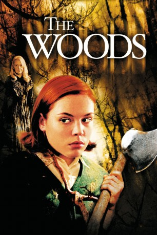

#11334 The Woods
 
 IMDB-Wertung: 5.7 / 10
IMDB-Wertung: 5.7 / 10  Tomatometer: 69
Tomatometer: 69  Metascore: 0
Metascore: 0 
Irgendwann in den frühen 60ern haben zwei Eltern genug von ihrer schwer erziehbaren, scheinbar pyromanisch veranlagten Tochter und geben die einfach nur hypersensible, über gesteigerte sinnliche Wahrnehmung verfügende Heather in die wenig vertrauenerweckende Obhut eines äußerlich konservativ anmutenden, neuenglischen Mädcheninternats. Dessen komplett aus schrägen Vögeln rekrutierte Geschäftsleitung hat auf den neuen Backfisch nur gewartet - doch könnte Heather ihnen gewachsen sein...?
Jahr: 2006
Dauer: 83 Minuten
FSK: 16
Land: USA Studio: Olive FilmsTonspuren:
Untertitel:
Auflösung: 1080p (1920x816) Größe: 3000 MB
Genre: Thriller, Horror, Mystery
Regisseur: Lucky McKee
Drehbuch: David Ross
Soundtrack: John Frizzell
Darsteller:
 Agnes Bruckner als Heather Fasulo
Agnes Bruckner als Heather Fasulo- Emma Campbell als Alice Fasulo
 Bruce Campbell als Joe Fasulo
Bruce Campbell als Joe Fasulo Patricia Clarkson als Ms. Traverse
Patricia Clarkson als Ms. Traverse- Lauren Birkell als Marcy Turner
- Catherine Colvey als Ms. Leland
 Marcia Bennett als Ms. Mackinaw
Marcia Bennett als Ms. Mackinaw Rachel Nichols als Samantha Wise
Rachel Nichols als Samantha Wise- Kathleen Mackey als Ann Whales
- Gordon Currie als
- Jude Beny als
- Melissa Altro als
 Maggie Castle als
Maggie Castle als - Ivana Shein als
- Leslie Cottle als
- Stephanie Breton als
 Elana Dunkelman als
Elana Dunkelman als  Alex Bisping als
Alex Bisping als  Angela Bettis als
Angela Bettis als - Linda Pine als
- Jane Gilchrist als Ms. Cross
- Cary Lawrence als
- Colleen Williams als
- Maia Balestriri als
- Amber Cull als
- James Bradford als
- Anna Fuerstenberg als
- Melissa Carter als Girl #1
- Alissa Amato als
- Elizabeth Marleau als
- Jessica Kennedy als
- Li Li als
- Jammes Luckett als
Datei: X:\2006(N-Z)\Woods, The (2006, FSK16, 1920x816).mkv seit 19.06.2019
Festplatte: HD 2005(G-Z)-2006(A-Z)
 Es gibt insgesamt 62 Filme in der Gruppe '2006(N-Z)'
Es gibt insgesamt 62 Filme in der Gruppe '2006(N-Z)'